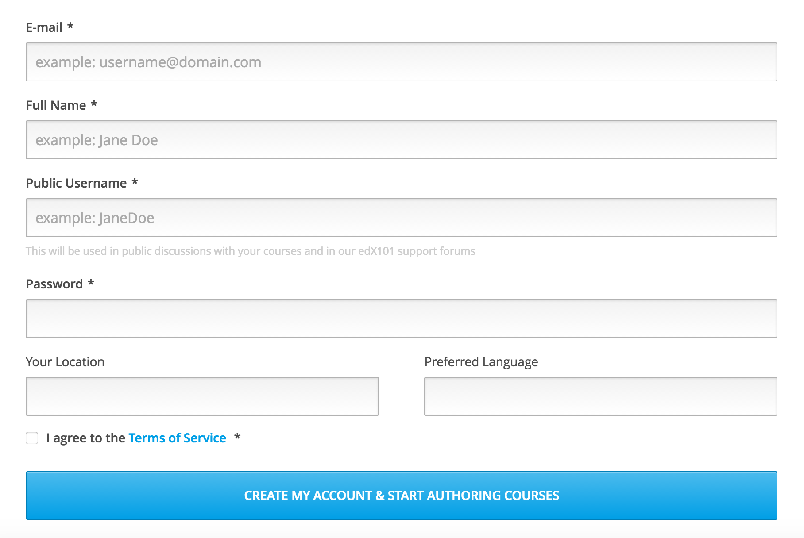
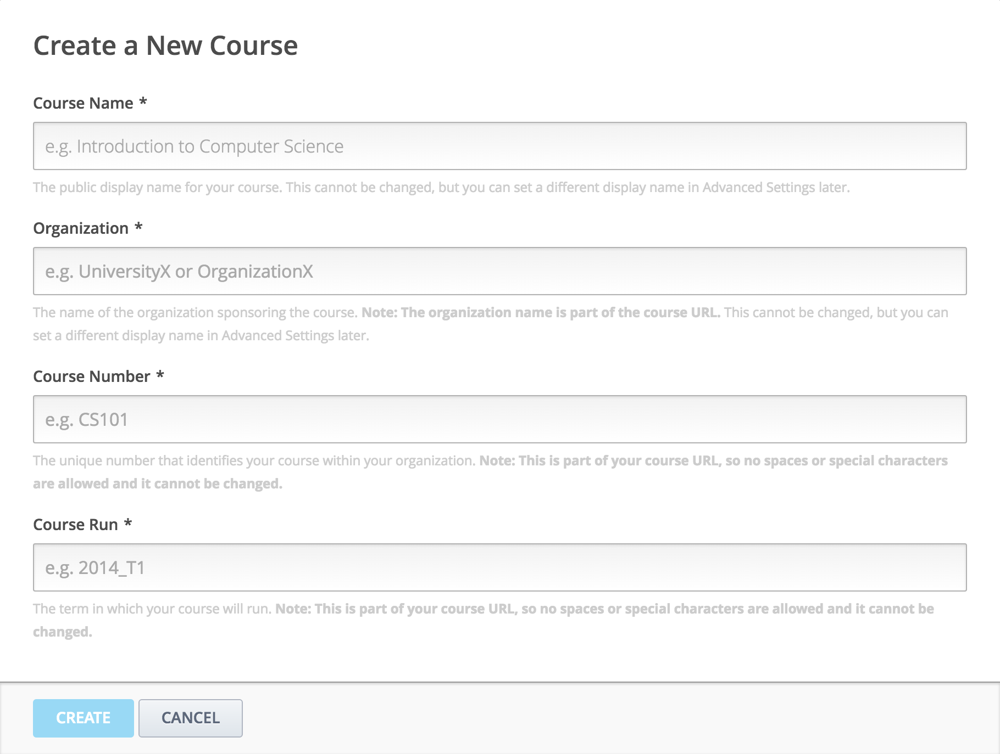
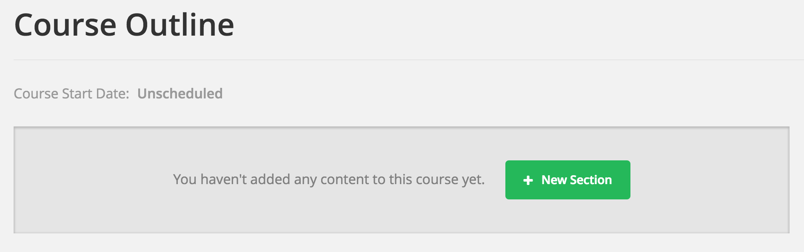
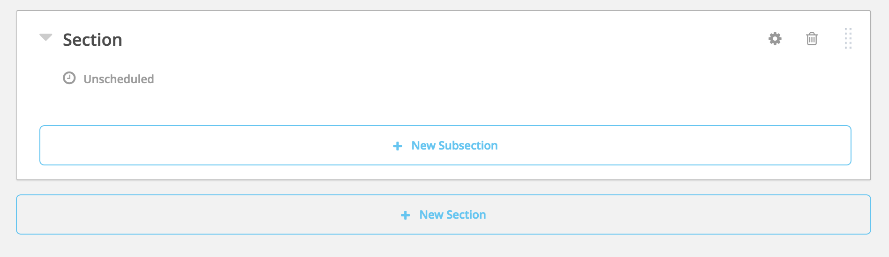
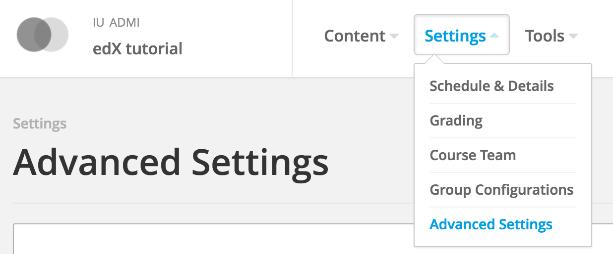
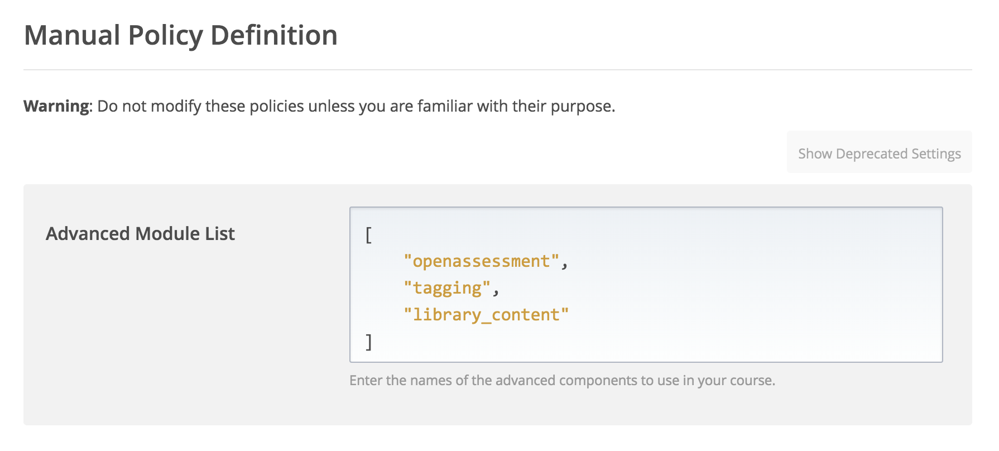
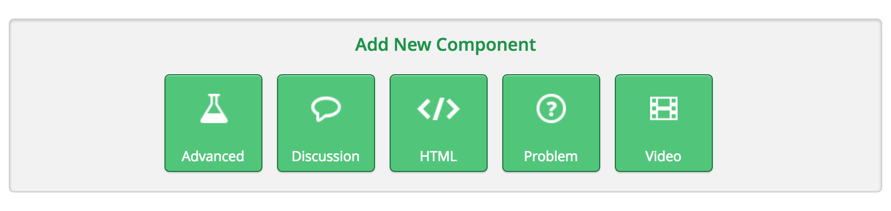
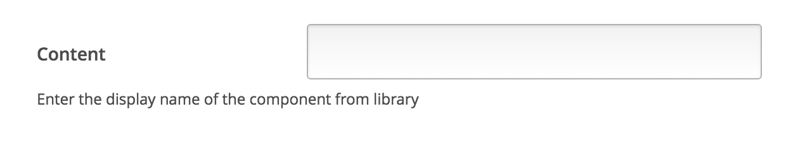
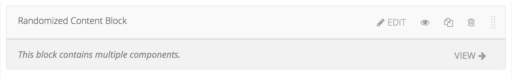

How to create online courses using MOOC/edX¶
MOOC/edX is a massive open online course (MOOC) provider. It hosts online university-level courses in a wide range of disciplines to a worldwide student body, including some courses at no charge. This tutorial will list the steps for creating an online course.
Getting Started with edX¶
In order to use edX platform, the user should create an account first. As the figure shows, fill in the form and the user will receive a registration verify email. Replace “localhost” in the address provided by the email to “cloudmooc2.soic.indiana.edu:18010” (the CMS address of edX) and log into the edX CMS (studio) system.
Create Your First Course¶

After log into the system, the user should be able to see a blank course list except a green button named “Create Your First Course”. The user can create his/her courses by click button “+ New Course” at the upper right corner. Then the user needs to fill the course name, organization, course number and course run in the form.
After the user click “Create” button, the website will show the course outline. Of course it is a blank outline, the user should create a section first using either the two buttons named “+ New Section”.
A new section appears in the blank area. The user should be able to edit the name of the section (e.g. week 1), release time of the section, etc. Also, the user can create a subsection under this section or a new section after this one.
What’s more, the user may delete this section using the “Trash” button at the upper right corner of the section, or drag this section to another place.
Create a New Lesson¶
In the subsection created earlier, create a new unit for the lesson. The outline should be as like follows.

Click the name of the unit to edit it. The user needs to import the lesson he/she wants to present in this unit. There are four types of components can be used for presentation:

- Discussion
In this part, the user (instructor) can create a discussion place for students. Students can post either question or discussion of this unit (lesson) if it is necessary. The user can give groups of students access to a specific set of course content by clicking the “eye” button.
The discussion part in LMS is like as follows.

- HTML
edX provides text descriptions under this part. The user can choose several formats in order to suit in his/her lessons. The user should be able to insert hyperlink, image, as well. If the user is familiar with HTML language, edX encourages to use “Raw HTML” editing the descriptions directly. The user can change either using visual edit (like common edit software, e.g. Word) or raw edit at any time by clicking “Edit” -> “Settings” -> “Editor”.
- Problem
edX also provides several types of problems for the users (instructors) creating assignments. The user can edit the problems like editing descriptions mentioned above. For each type of problem, the explaination will be presented in detail at the description place.
- Video
Video part is the main part of the lesson. By clicking the “video” button, edX will create a video template for the users. The user can do changes (e.g. name, URL) under “Edit” window. edX allows each video shows its transcription on the right side. The transcription should be a .srt file and provided by the user.

Import/Export Your Course¶
edX provides an easy way for the users to migrate courses between edX platforms. These two functions are in “Tools” at the header of the CMS (studio).
- Import
By clicking “Import” button, the user should be able to see an introduction of the import function and a big green button on the main page. Click the “Choose a File to Import” button, and select a .tar.gz file which includes the detials of the course that the user wants to import. If the user imports a new course, he/she must create a blank course as the base. What edX does is using the .tar.gz file to replace the current course which is blank. If the user only needs to update, then he/she can just use the current course.

- Export
Export function is more like a download function. After load into its page, the user can click “Export Course Content” button to download a .tar.gz file including the whole course content. If the user is familiar with HTML language, he/she should be able to edit the source code as he/she wants. The user must keep the structure of the course content, otherwise when importing this course, the CMS will throw out an error.
Create Your Library¶
The library in edX is a tool for the users who need to reuse course modules which already exist. The user should first enable courses can access to the direct library in “Settings”, then he/she can create a link which links to the Xblock they have already stored in the library.

Like the figure showing above, the user needs to change to “Libraries” under the “Studio Home”, then click “+ Create Your First Library” button to create a new library. Next the user needs to fill the form as what he/she does in creating a new course.
Libraries provide three types of Xblock: HTML, Problem, Video. The descriptions of these three is same as in unit. Make sure the Xblock in the repository has an unique display name, because edX uses this variable to link from the course.
Like courses, libraries has “import” and “export” functions as well. The operations are also same as in importing/exporting courses.
Use Modules in Libraries¶
The user should first make the course access to the library from which they want to import course modules. Click into the course, then go to “Settings” in the head and click “Advanced Settings”.
Then the user needs to add “openassessment”, “tagging”, “library_content” in the first box. Just type them in “[]”, like the figure shows below. Next, click “Save Changes” yellow button at the bottom of the page. The user will see a green checkmark at the header, saying that “Your policy changes have been saved”.
Go back to the unit which you want to import from an existed module, the user should be able to find a new component named “Advanced” at the first. Click it and choose “Randomized Content Block” to create a new Xblock.
The user should edit this Xblock in order to link to the existed module in the library. Click “Edit” in the header of the Xblock and input the display name of the Xblock in the library in the first box, choose the library which concludes the module in library dropdown box as shown below.

After click “Save” button and assume the user inputs a correct name, the Xblock should be like as follows:
The user should be able to click “View” button to check the Xblock in the library. After publish this unit to LMS, LMS will show the Xblock in the library automatically.
Assemble Your Course From Libraries¶
The user can use the instruction above to create the structure of a course, then in one unit (lesson), he/she should be able to import course modules from the libraries.

The figure shows a sample lesson which includes two parts from the library the user choose. The user can click “View” button in the right to see the detail of the Xblock he/she links.
The user can click “Publish” button in the right side to publish this lesson to student. This sample in LMS (student view) should be like as follows.


{kind=link}
{kind=link}
{kind=link}
{kind=link}
{kind=link}
{kind=link}
{kind=link}
{kind=link}
{kind=link}
{kind=link}